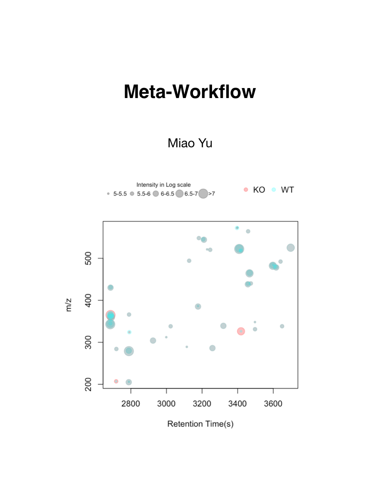

Meta-Workflow
2026-04-02
Preface

This is an online handout for mass spectrometry based metabolomics data analysis. It would cover a full reproducible metabolomics workflow for data analysis and important topics related to metabolomics. Here is a list of topics:
- Sample collection
- Sample pretreatment
- Principles of metabolomics data analysis
- Software selection
- Batch correction
- Annotation
- Omics analysis
This is a book written in Bookdown. You could contribute it by a pull request in Github. A workshop based on this book could be found here. Meanwhile, a docker image xcmsrocker is available for metabolomics reproducible research.
R and Rstudio are the software needed in this workflow.
License
This book is dedicated to the public domain under the CC0 1.0 Universal (Public Domain Dedication).

You are free to copy, modify, distribute, and use this work, even for commercial purposes, without asking permission or giving attribution.